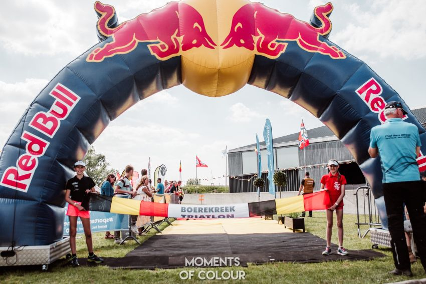

Op zaterdag 31 augustus 2024 verwelkomen we zowel jeugd als volwassenen tijdens de tweede editie van de Grenstriatlon in Sint-Laureins. De organisatie koos voor een nieuwe datum wegens een overvolle wedstrijdkalender van Triatlon Vlaanderen en concurrentiële wedstrijden op een gelijklopende datum. Er staan wedstrijden gepland voor de ironkids (vanaf 6 jaar), een jeugdwedstrijd en een recreatieve sprinttriatlon (stayeren of fietsen in groep toegelaten - dus geen tijdritfietsen).

GRENSTRIATLON - meer dan alleen een triatlon
Een prachtig sportevent in de grensgemeente St-Laureins voor jong en oud in een uniek kader aan de Belgisch-Nederlandse grens. De parcours doorkruisen het krekengebied, ten Noorden van het Meetjesland, langs de historische Spaanse linies.
PARKING
Er zijn 2 grote parkings voorzien voor de deelnemers:
* Locatie Rommelsweg, ong. 500m van eventsite
* Locatie sport- en jeugdterrein 't Sentrum, Singelken 14 (150 parkeerplaatsen) - ong. 900m van eventsite
WEDSTRIJDSECRETARIAAT
De inschrijvingen vinden plaats in de gemeentelijke sporthal St-Laureins (Dorpsstraat 78, 9980 St-Laureins).
Programma wedstrijden:
13u00 - Ironkids A (6-9 jarigen) + ouder >> verrassingsproef + 750m lopen, 5 km fietsen, 1 km lopen
13u02 - Ironkids B (10-11 jarigen) + ouder >> verrassingsproef + 750m lopen, 5 km fietsen, 1 km lopen
14u30 - Jeugd C + B >> 300 m zwemmen, 5 km fietsen, 1,5 km lopen
16u30 - Recreatieve sprinttriatlton Dames + trio's >> 500 m zwemmen, 24 km fietsen, 5 km lopen
16u35 - Recreatieve sprinttriatlton Heren >> H16/H18/JUN/U23/seniors >> 500 m zwemmen, 24 km fietsen, 5 km lopen
16u37 - Recreatieve sprinttriatlton Heren >> H40/50/60 >> 500 m zwemmen, 24 km fietsen, 5 km lopen
PARCOURS (onder voorbehoud)
Voor de Ironkids A/B+ouder wordt er een duatlon formule voorzien. Eerst samen een leuke verrassingsproef afleggen en daarna lopen-fietsen-lopen.
Voor de andere categoriën wordt er gezwommen in het historische Leopoldskanaal in rechte lijn volgens de gekozen afstand (300m voor jeugd C+B - 500m voor de recreatieve sprinttriatlon). De atleten verplaatsen zich te voet naar de zwemstart. Zorg dat jullie tijdig inchecken en vertrekken (te voet) naar de juiste zwemstart.
De supporters, begeleiders en coaches kunnen meestappen langs het verkeersvrije Leopoldskanaal (Noordzijde) om hun atleten aan te moedigen en van dichtbij te volgen. De wisselzone is vlakbij de zwemexit ter hoogte van Moershoofdebrug in de voorziene weide. Er zijn 2 verschillende fietslussen voorzien (5km voor jeugd C en B-atleten of 7 km voor sprinttriatlon en trio's) door het krekengebied langs verschillende grenspalen. De stevige polderwind zorgt steeds voor een selectief en snel fietsparcours.
Na de afgelegde fietsafstand fietsen de deelnemers terug naar de wisselzone (ongeveer 200m).
De finish en meerdere passages tijdens het lopen liggen in de buurt van het eventterrein ter hoogte van de sporthal St-Laureins. Er wordt gefinisht ter van het gemeentehuis van St-Laureins.
Zie wedstrijdbriefing voor definitieve parcours en planning.
Ingesloten inhoud openen (internet nodig)
BRIEFING
Briefing ironkids
Briefing jeugd C – B
Briefing sprinttriatlon
BEWONERSINFO
Brief bewoners.
Annulatiebeleid
Ter ondersteuning van de organisatoren investeerde Triatlon Vlaanderen in een algemeen annulatiebeleid voor organisatoren die werken met het inschrijvingsplatform 3ntrance. Ondertussen is het nieuwe beleid in voege en geautomatiseerd via het inschrijvingsplatform 3ntrance. We vatten de voorwaarden nog even samen:
- Annulatie tot 2 maand voor de wedstrijd = 100 % terugbetaling
- Annulatie tot 1 maand voor de wedstrijd = 50% terugbetaling
- Annulatie minder dan 1 maand voor de wedstrijd = geen terugbetaling
- Administratieve kost wordt nooit terugbetaald
De atleet of team ondertekent deze voorwaarden bij registratie. Nadien kan men de deelname annuleren en terugbetaling aanvragen via het online profiel (zie stappenplan hier). De terugbetaling gebeurt automatisch waardoor organisatoren volledig zijn vrijgesteld van verdere opvolging en/of terugbetalingen. Voor atleten zijn de voorwaarden op deze manier ook duidelijk en transparant voor alle wedstrijden. Via het inschrijvingsbeheer heeft de organisatie steeds een overzicht van de personen die annuleren.
De annulatievoorwaarden kan je hier terugvinden.
Uw inschrijving kan eventueel worden overgedragen naar een andere atleet, mits kennisgeving via grenstri@smo-scott.be.
REGLEMENTEN
Alle sportreglementen van Belgian Triathlon (Be3) zijn van toepassing.
NL: https://www.triathlon.be/_files/ugd/0e6653_f17a27377d5b434dbdbe7e838a52c64c.pdf
FR: https://www.triathlon.be/_files/ugd/0e6653_12adea14b2674315b442b7d47b880530.pdf
Belangrijke wijziging: Een atleet gebruikt voortaan een wisselbox in de wisselzone, waar al het benodigde materiaal wordt in verzameld (7.1.d). De standaardafmetingen bedragen L45x35x25 cm maar ook een curverbox volstaat.
De permanente fiets- en wandelroutes langs het wedstrijdparcours blijven bereikbaar mits een kleine omleiding langs het jaagpad van het Leopoldskanaal. Kom dus zeker een kijkje nemen aan onze hotspots langs het parcours!
MET DANK AAN
Gemeentebestuur St-Laureins, Gemeente Sluis, Politie en Brandweer Meetjesland, Triatlon Vlaanderen, Sport Vlaanderen, SMO Machinebouw, SCOTT Benelux Bikes, Hubo Eeklo, Metaalhandel Christiaens nv Eeklo, Traxxion, CadoMotus Triathlon, Peaks Sportswear wetsuits, Trititan, fietsen Cycloon Kaprijke, Wcup, Lotus Bakeries, Server Storage Solutions, Brouwerij Augustijn, De Vlaamse Waterweg nv, BoPlan.